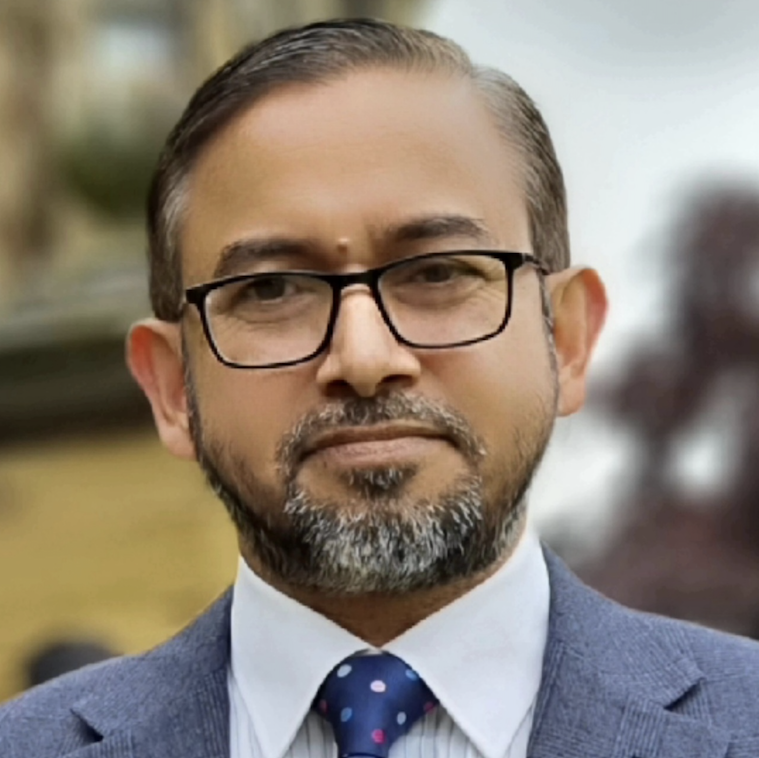

| Home | Calls | Media | Program | Organisation | WWW25 |
The TIME 2025 workshop, organized as part of The Web Conference 2025 (WWW 2025), represents a pivotal initiative in advancing cross-domain knowledge exchange and methodological innovation in contemporary web technologies. Aligned with WWW 2025’s mission, it addresses pressing challenges in the digital ecosystem, including privacy concerns, algorithmic biases, and the demand for ethical and transparent web practices. TIME 2025 offers a premier platform for academics and industry experts to collaborate on critical topics such as social network analysis, graph algorithms, web mining, security, and ethics. By fostering comprehensive evaluations and providing practical guidance, the workshop bridges the divide between theoretical research and real-world applications. Its focus on actionable solutions and cross-disciplinary insights underscores its commitment to the broader objectives of WWW 2025, advancing innovative, responsible, and impactful web technologies.
|
Assoc. Prof. Wei Liu
H-index: 28, Citations: 3,983 University of Western Australia, Australia A/Prof Liu received her PhD from the University of Newcastle, Australia in 2003. She holds a full time teaching & research academic position in the Department of Computer Science and Software Engineering at the University of Western Australia. She leads the UWA Centre for Natural and Technical Language Processing, with research effort focusing on knowledge discovery from natural language text (NLP), generative AI, LLM-based semantic technologies, deep learning methods for knowledge graph construction and analysis, as well as sequential data mining and forecasting. Her recent work includes training machine learning models from fusing multi-modality heterogeneous data, and neural-symbolic computation with human-in-the-loop for symbiotic intelligence. Her industry-related research projects include knowledge graph refinement for geological survey reports, technical language processing on maintenance work orders, incident/safety log analysis and visualization, short-term traffic prediction, and clinical data integration and analysis in ophthalmology. She leads the research theme on Technical Language Process at the ARC Industrial Transformation and Training Centre for Transforming Maintenance through Data Science, and the Data to Knowledge Theme for the ARC Industrial Transformation and Training Centre in Critical Minerals for the Future. |
|
|
Dr. Fateme Fahiman
H-index: 4, Citations: 175 Australian Energy Market Operator (AEMO), Australia Dr. Fateme Fahiman is a recognized leader in data science and machine learning, honored as one of Australia’s Top 25 Analytics Leaders by the Institute of Analytics Professionals Australia. With over a decade of experience spanning academia and industry, she has driven transformative projects in advanced analytics, AI/ML, and generative AI across energy markets and beyond. Her work has earned accolades such as being a finalist for the Engagement Australia 2020 Excellence Awards for her innovative risk management tools that support the operation of Australia’s national electricity grid. Dr. Fahiman has held prominent roles, including Senior Manager of Data Science & Machine Learning Engineering at the Australian Energy Market Operator (AEMO), where she led groundbreaking initiatives in AI governance and demand forecasting for national energy infrastructure planning. She holds a PhD in Computer Science/Machine Learning from the University of Melbourne, specializing in predictive modeling, time-series forecasting, and anomaly detection. With a passion for bridging the gap between research and impactful industry solutions, Dr. Fahiman combines deep technical expertise with strategic leadership to deliver analytics capabilities that drive innovation and value. |
|
|
Prof. Tanzila Saba
H-index: 84, Citations: 20,416 Prince Sultan University, Saudi Arabia Dr. Tanzila Saba earned PhD in document information security and management from Faculty of Computing Universiti Teknologi Malaysia (UTM), Malaysia in 2012. She won best student award in the Faculty of Computing UTM for 2012. Currently, she is serving as Associate Prof. in College of Computer and Information Sciences Prince Sultan University (PSU) Riyadh Saudi Arabia. Her primary research focus in the recent years includes Bioinformatics, Data mining and Classification. She has published one hundred plus publications in high ranked journals. She was awarded best research of the year award in PSU from 2014 to 2017. Due to her excellent research achievement, she is included in Marquis Who’s Who (S & T) 2012. She was the PSU WiDS ambassador. Currently she is editor of several reputed journals and on panel of TPC of international conferences. She is also IEEE senior member. |
|
|  |
Assoc. Prof. Mohammad Abdur Razzaque
H-index: 31, Citations: 4,847 Teesside University, United Kingdom Dr Mohammad A. Razzaque (Raz) is an Associate Professor (Research & Innovation) in the School of Computing, Engineering and Digital Technologies, at Teesside University. Before joining Teesside University, he worked as a Senior Research Fellow at Trinity College Dublin (2014-2017) and Senior Lecturer at the Faculty of Computing, University Technology Malaysia (2011-2014). Currently, he is working on secure machine learning, especially cybersecurity of generative AI and generative AI for cybersecurity, collaborating sensing for unmanned vehicles, and applications of generative AI (e.g., chatGPT, GPT). Besides, he is supervising/co-supervising nine PhD students at Teesside University. |